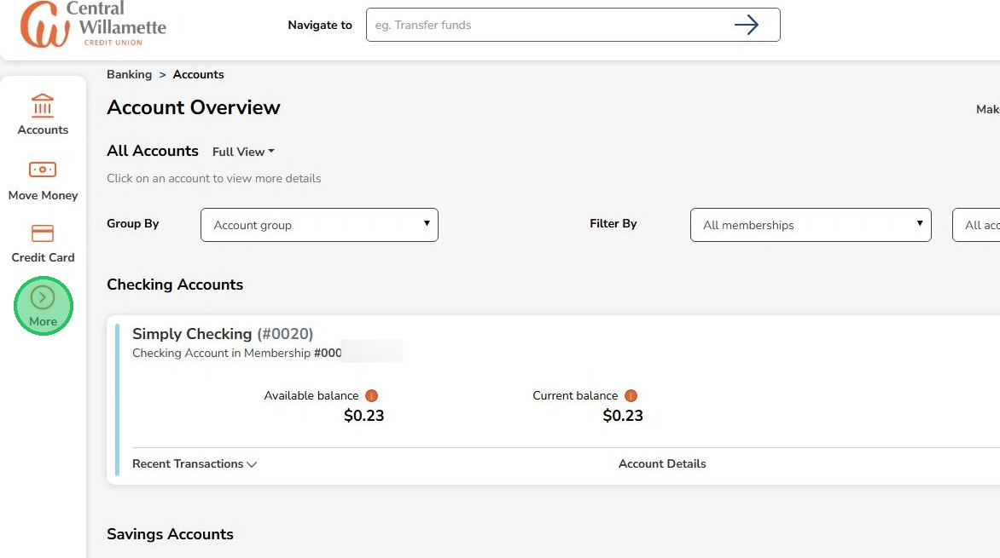
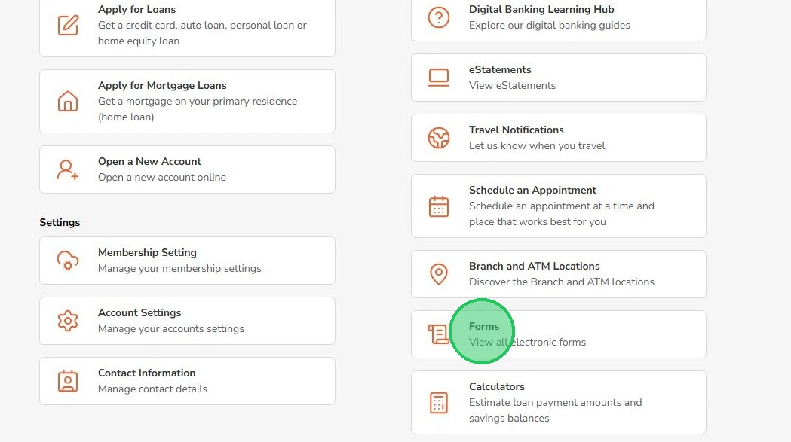
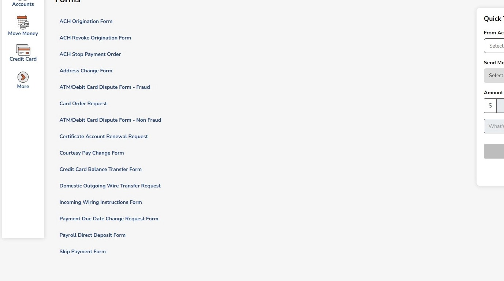

Accessing Various Forms Online
This guide will help you find and complete important forms in your online banking account.
1
Click "More"

2
Click "Forms"

3
These are the forms that can be completed online. These forms are submitted to our support staff automatically and they will reach out to you if more information is needed. ACH Origination Form Set up automatic payments from another financial institution to pay CW loans or credit cards. ACH Revoke Origination Form Cancel an existing ACH automatic payment. ACH Stop Payment Form Stop a specific ACH payment from your CW account. Address Change Form Update the address on your accounts. ATM/Debit Card Dispute Form - Fraud Report and dispute a fraudulent ATM or debit card transaction. Card Order Request Request a new ATM or debit card if your card is damaged, expired, or not received. ATM/Debit Card Dispute Form - Non-Fraud Dispute a non-fraudulent ATM or debit card transaction (e.g., damaged item, cancelled recurring charge). Certificate Account Renewal Request Renew a certificate (CD) that is maturing. Courtesy Pay Change Form Opt in or out of Courtesy Pay. Credit Card Balance Transfer Form Transfer a balance from a non-CW credit card to your CW credit card. Domestic Outgoing Wire Transfer Request Request a wire transfer from your CW account. Incoming Wire Instructions Form Printable form with instructions to receive a wire into your account. Payment Due Date Change Request Form Request a change to your loan payment due date. Payroll Direct Deposit Form Printable form with instructions to set up direct deposit to your account. Skip Payment Form Request to skip a loan payment.

Forms are submitted to our support staff automatically and they will reach out to you if more information is needed.